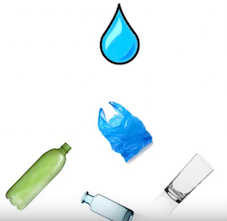

Application do Singularity
Curso: Grandes Desafios da Engenharia
Período: 1° (ciclo básico)
Data: 7/junho
Duração: Poderiamos fazer ao longo do semestre
Descrição: Usando o application da NASA desse ano (2016) tivemos que pensar em uma ideia que atingisse 1 bilhão de pessoas em 10 anos. Com a ideia pensada, tinhamos que fazer um breve texto explicando ela, e um vídeo de no máximo dois minutos, também explicando ela.
Conhecimentos exigidos: Pensar em algo inovador, aprender a aprender.